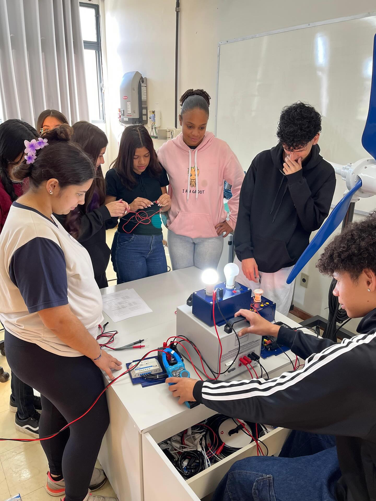

Cursos Oferecidos
A Escola Estadual Sanico Teles oferece cursos que dão aos alunos mais do que conteúdo: abrem portas. Cada formação foi pensada para fortalecer habilidades reais, daquelas que fazem diferença no dia a dia e no futuro profissional. É o tipo de aprendizado que mistura tradição da escola com a vontade de preparar uma geração pronta para criar, trabalhar e transformar. Quem entra nesse caminho encontra oportunidades que impulsionam talentos e revelam novas possibilidades, tudo dentro de um ambiente que respira educação de verdade.
Técnico Informática
.jpg)
O curso técnico em Informática oferece ao estudante a chance de mergulhar no universo da tecnologia de forma prática e envolvente. Durante as aulas, o aluno aprende a montar e configurar computadores, entender redes, explorar programação e dominar ferramentas que fazem parte do dia a dia digital. É um curso que desperta curiosidade porque transforma teoria em prática: o estudante vê seu próprio código funcionando, entende como sistemas se conectam e descobre como resolver problemas que muita gente nem sabe por onde começar. Além disso, a informática abre caminho para diversas áreas, desde desenvolvimento de softwares até suporte técnico, criando opções reais de futuro já dentro da escola. Para quem gosta de tecnologia, lógica e desafios que fazem pensar, esse curso é uma porta aberta para um mundo cheio de oportunidades.
Técnico Energia Renováveis

O curso técnico de Energias Renováveis se destaca por unir ciência, tecnologia e sustentabilidade dentro do ambiente escolar. O estudante descobre como funcionam painéis solares, turbinas eólicas e sistemas que aproveitam a força da água, entendendo na prática como a energia limpa é produzida. Além disso, aprende a analisar consumo, identificar desperdícios e criar soluções que tornam o uso de energia muito mais eficiente. Esse curso chama atenção porque coloca o jovem em contato com uma das áreas que mais cresce no mundo, abre portas para oportunidades futuras e desperta a consciência de que é possível trabalhar com tecnologia sem abandonar o cuidado com o planeta. É um aprendizado moderno, útil e cheio de possibilidades para quem gosta de ciência, inovação e impacto real no mundo.